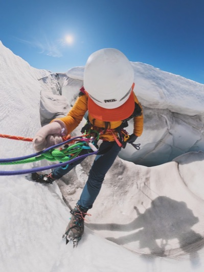

Work
I’ve been at Stripe for nine years and lead web presence, which means the team behind stripe.com. I joined as a designer who built and shipped the site myself. Now I manage designers and the managers who lead them.
Before Stripe, I was the lead web and brand designer at Mapbox. I studied graphic design in Belgium, then went back to school to learn to code so I could build what I designed.
I lead with empathy and trust. I hold a high bar for craft, and I measure it by what’s best for the people who use what we build. That means obsessing over the details, down to the smallest animation. I push my team to aim higher than they would on their own, and I take just as much responsibility for helping them get there.
Life
Outside of work I’m in the mountains as much as I can: hiking, trail running, scrambling, skiing, backcountry skiing, and mountaineering, almost always with a camera. Much of my design work is inspired by the beauty of nature.
A lot of the people closest to me, I met through the mountains. I’m part of a community of women climbers where we plan trips together, share gear and skills, and learn from each other.
I also volunteer with The Mountaineers, where I help instruct the crevasse rescue course.
